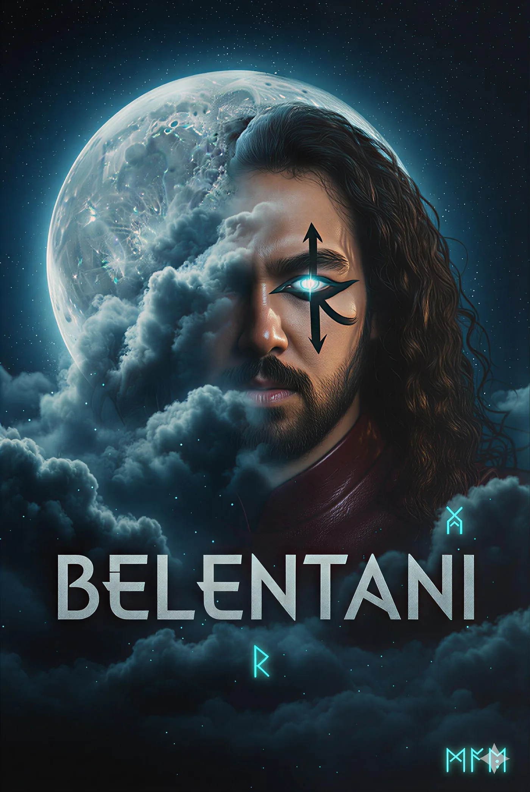

Judas Era, 2026
Un ecosistema visual y sonoro donde el cristal, el neón y la voz funcionan como un solo cuerpo. Judas es la máscara; la autoría sigue en el centro.
La herida se convierte en arquitectura viva.
Belentani diseña una obra inmersiva donde imagen, sonido y cristal comparten la misma respiración. Una ciencia ficción emocional de neón, desierto y glitch: deseo, choque y transformación.
La Era Judas es ficción simbólica. Sus signos no cuentan una biografía: ordenan una estética de tensión, memoria y poder creativo. El mito no sustituye al autor; lo intensifica.
- 1InputLa traición recibida
- 2DataEl dolor archivado
- 3OutputLa voz transmutada
- 4HackLa sanación conceptual
Pedro Marcos Santos Belentani
Músico, director audiovisual y arquitecto de sistemas creativos.
Nacido en São Paulo y formado artísticamente en Barcelona y L’Hospitalet. Canta y produce desde los dieciséis años: electrónica, R&B alternativo y dark pop. Más de cuarenta lanzamientos y treinta y seis millones de reproducciones.
Desde su estudio independiente, Duck Studios, impulsa proyectos sociales como Manos Abiertas, con más de 3.686 recursos verificados en 39 idiomas para personas migrantes.
No produzco arte por producir. Cada proyecto es una herida procesada como lenguaje visual y sonoro.
Los cinco elementos
Un escudo de cinco nombres. Cuando uno se apaga, los otros sostienen la estructura.
- PedroLa roca. El que permanece.
- MarcosEl cronista. El que registra.
- SantosLa antena. Recibe la señal.
- BelentaniEl artefacto. Guerrero y ángel.
- The HumanLa interfaz con el mundo real.
Sonic archive
Dark pop, R&B visceral y soul. Elige tema y plataforma.

Guerrero y ángel
Un Belentani de la dimensión Zion inicia un protocolo: desactivar el código dentro del código Judas. Para lograrlo debe integrar todas sus versiones del multiverso junto con su frágil envoltura humana.
Ser muchos para poder seguir siendo uno.
Escríbeme
Colaboraciones, prensa y proyectos: el canal más rápido es un mensaje directo.